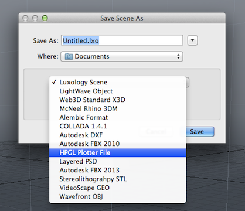

Io scene hgpl¶
Io_scene_hgpl is a basic example plugin. This wiki page is intended as a walkthrough of the code in order to help you better understand the SDK.
When installed this plugin adds a saver/loader that loads/saves HPGL Plotter files.
The saver option highlighted above.
Class Declarations¶
Here we want to create a default line parser, so we have CGEOParser inherit from CLxLineParser. CLxLineFormat defines all the methods for a vanilla format for line-based text files. The only function we redeclare is lf_Separator, which governs what separates each element. However, we redeclare the function exactly as it appeared initially, so there is no delimiter.
We also want this class to be able to convert from meters to plotter units, so we declare the Coord function to do just that.
The rest of the functions keep track of the pen state.
1 2 3 4 5 6 7 8 9 10 11 12 13 14 15 16 | class CHPGLFormat : public CLxLineFormat
{
public:
virtual const char * lf_Separator () { return ""; }
int Coord (float);
void outInit ();
void outPen (int);
void outPoint (float, float);
void outBreak ();
void outDone ();
bool pen_down;
int cur_pen;
int next_pen;
};
|
A polygon edge consists of two point IDs. To rank them we first sort the IDs within each edge and then compare the similar ones.
This class is used as the structure in which the data is saved in the ss_Polygon function of the CHGPLSaver function.
1 2 3 4 5 6 7 8 9 10 11 12 13 | class CEdge {
public:
LXtPointID v[2];
bool operator< (const CEdge &x) const
{
int ti, xi;
ti = ( v[0] < v[1]);
xi = (x.v[0] < x.v[1]);
return (v[ti] < x.v[xi] || v[ti] == x.v[xi] && v[!ti] < x.v[!xi]);
}
};
|
We want this class to do two things. The first is to itself be the format through which the scene is saved, and the second is to save a scene.
To accomplish the first, we inherit from our custom line format, CHPGLFormat. We then declare a method, ss_Format, that gives us access to this format through a this pointer.
To accomplish the second, we inherit from CLxSceneSaver, which contains the methods for saving a scene. We declare the GetOptions method, which retrieves certain values from the user, to use in out ss_Save method, which saves our scene according to our custom format. We also declare a PlotPoint method, which puts the value of a point into a float array. We then use this function in our ss_polygon function, which draws the polygons.
The functions with the ss prefix here indicate functions that have been redeclared from functions we have inherited from. In the case of Format and Polygon they were pure virtual functions as the format for saving will be unique to each custom saver function. It then follows that the saver function, which depends on that format, will be unique to each custom saver function.
1 2 3 4 5 6 7 8 9 10 11 12 13 14 15 16 17 18 19 20 | class CHPGLSaver : public CLxSceneSaver, public CHPGLFormat
{
public:
virtual CLxFileFormat * ss_Format () { return this; }
virtual LxResult ss_Save ();
virtual void ss_Polygon ();
void GetOptions ();
void PlotPoint (LXtPointID);
int opt_proj;
double opt_scale;
int idx_x, idx_y;
float max_x, min_y;
map<CEdge,int> edge_map;
static LXtTagInfoDesc descInfo[];
};
|
./Server_Tags¶
Servers tags are examined when the server is initialized, and give information about the server. We set the tags in this case by taking a descinfo[] array and associating the relevant data with the corresponding flags.
These tags define the Saver class above as saving SCENE files with the extension .plt and the identity HGPL Plotter File.
1 2 3 4 5 6 7 8 9 10 | LXtTagInfoDesc CHPGLSaver::descInfo[] = {
{ LXsSAV_OUTCLASS, LXa_SCENE },
{ LXsSAV_DOSTYPE, "plt" },
{ LXsSRV_USERNAME, "HPGL Plotter File" },
{ LXsSRV_LOGSUBSYSTEM, LOG_NAME },
#ifdef LICENSE
{ LXsSRV_LICENSE, LICENSE },
#endif
{ 0 }
};
|
./Initialize_(index)¶
Servers are extensible set of features that we add to modo, usually through plugins. Intialize is called when we add the plugin to modo, and is the utility that exports the server. The LXx_ADD_SERVER method is simply a wrapper that is identical to normal method of adding a server, with the arguments being (interface_to_be_added, class_you_depend_on, server_name).
In this case, we will be adding one server to modo of type saver that will depend upon the CHPGLSaver.
1 2 3 4 5 | void
initialize ()
{
LXx_ADD_SERVER (Saver, CHPGLSaver, SAVER_NAME);
}
|
Implementations¶
This function perform scaling from meters to plotter units.
1 2 3 4 5 6 | int
CHPGLFormat::Coord (
float m)
{
...
}
|
These are utilities that keep track of the pen state.
1 2 3 4 5 6 7 8 9 10 11 12 13 14 15 16 17 18 19 20 21 22 23 24 25 26 27 28 29 30 31 32 | void
CHPGLFormat::outInit ()
{
...
}
void
CHPGLFormat::outPen (
int pen)
{
...
}
void
CHPGLFormat::outPoint (
float x,
float y)
{
...
}
void
CHPGLFormat::outBreak ()
{
...
}
void
CHPGLFormat::outDone ()
{
...
}
|
GetOptions retrieves certain parameters with which to save your file; It is called in ss_Save .
1 2 3 4 5 | void
CHPGLSaver::GetOptions ()
{
...
}
|
ss_Save performs the meat of the saving work
1 2 3 4 5 | LxResult
CHPGLSaver::ss_Save ()
{
...
}
|
Plotting polygons we want to draw only the contour edges, not edges that connect to holes. Thus we count the number of times an edge occurs in the polygon and only draw those that happen exactly once.
1 2 3 4 5 | void
CHPGLSaver::ss_Polygon ()
{
...
}
|
This function takes one point and puts it value into a float array. It is called in the Polygon function.
1 2 3 4 5 6 | void
CHPGLSaver::PlotPoint (
LXtPointID pnt)
{
...
}
|